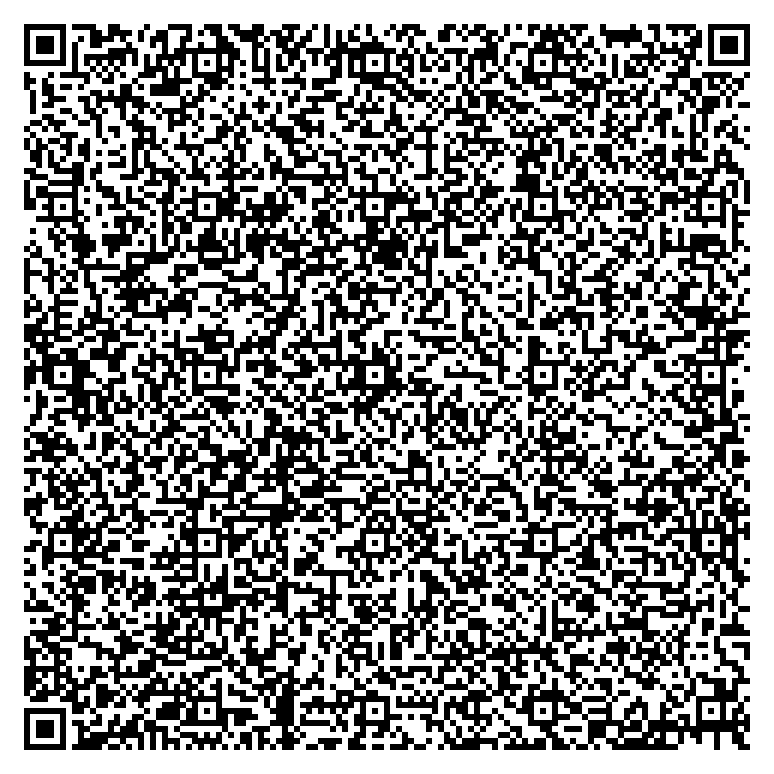

Artists & makers
Print a miniature artwork on a card. Let someone keep it, share it or make their own mint.
Small creations. Easy to pass on.
Your small artwork, game or useful file can travel inside a printed QR. Someone scans it, explores the creation, and decides whether to mint their own copy.
Public content, no transfer expiry. Wallet approval is a separate step.
Print a miniature artwork on a card. Let someone keep it, share it or make their own mint.
Pass around a keepsake on posters, tables or messages. Each person chooses what happens next.
Share a small lesson, game, instrument or tool. The actual compact files travel with the code.
Encrypted handoff for today's creation. The relay link lasts 15 minutes. Open it in your phone's wallet browser when ready.
Small public content embedded in the code. No relay upload, transfer expiry or revocation. Forward the same code to preserve the creation.
Working sample · unminted request
A 365-byte SVG creation carried inside this QR. Open the exact files in Studio, save them, or print the code and pass it on.
Keep the white border and test the actual print on the intended phone.

Explore working interactive programs and exact-file attachments. Set 1–1,000 copies in a transaction, policy duration, public traits and a transaction message. All applied mint options travel inside the verified request.
Copies share one asset identity and initially go to your wallet. The policy window starts at preparation. This is not a lifetime supply cap or a shared collection mint. Holder-only benefits, one-time redemption and evolving state require their own enforcing implementation.
{kind=link}
{kind=link}